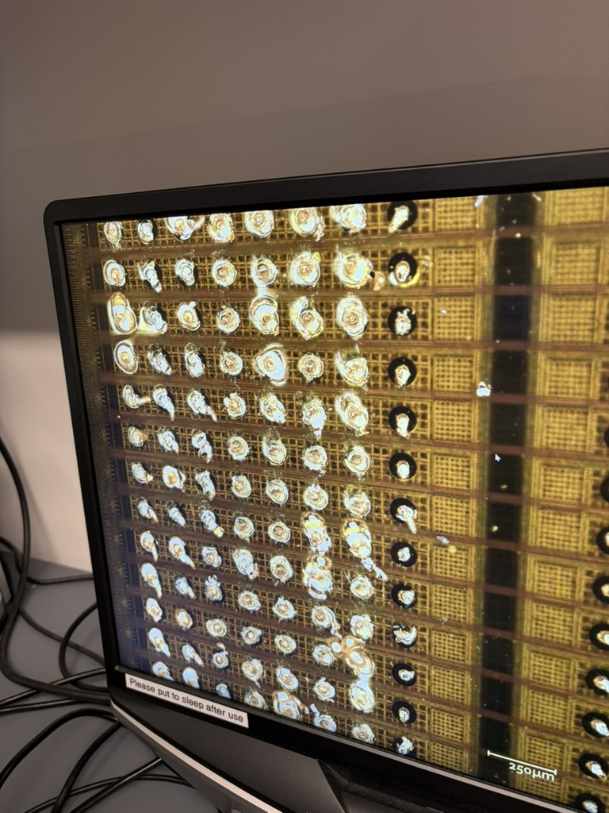
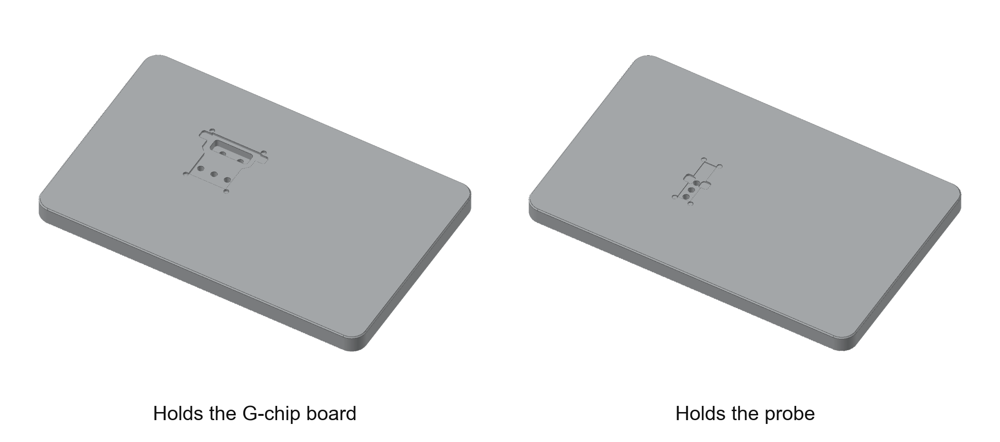
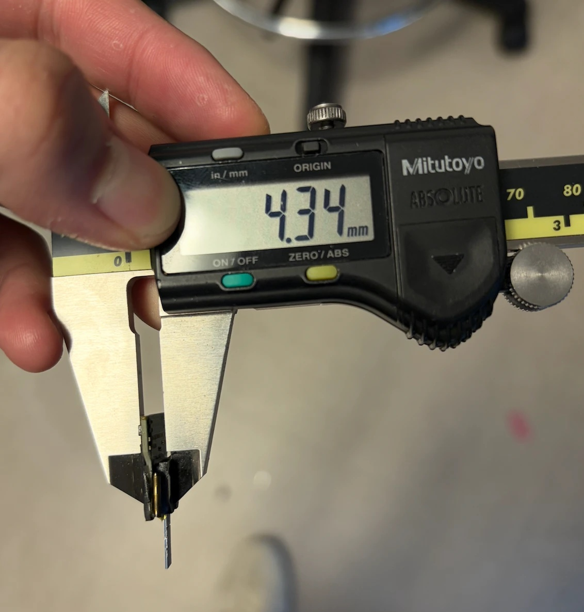

G-chip bonding: EFO errors
- Several failure modes
- Each from more than one cause
- Removing causes one at a time
- New suction fixtures hold the board and probe flat





The 4K stack needs a thinner build
G-chip today
Board 0.5 mm
Finished device 4.34 mm (measured)

4K head stack
ASIC board V10 3D model, to scale